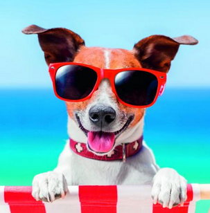

<ion-header>
    <ion-toolbar class="navbar" mode="ios">
        <ion-buttons slot="start">
            <ion-menu-button color="light"></ion-menu-button>
        </ion-buttons>
        <ion-title style="--color:#ffffff;">Vetcompany</ion-title>
    </ion-toolbar>

    <ion-toolbar>
        <ion-tabs>
            <ion-tab-bar>
                <ion-tab-button [ngClass]="{'border': !chats}" (click)="change_option(false)">
                    <ion-icon name="contacts"></ion-icon>
                    <ion-label>Usuarios</ion-label>
                </ion-tab-button>
                <ion-tab-button *ngIf="is_chats" [ngClass]="{'border': chats}" (click)="change_option(true)">
                    <ion-icon name="chatbubbles"></ion-icon>
                    <ion-label>Chats</ion-label>
                </ion-tab-button>
                <ion-tab-button (click)="navegar('rastreo')">
                    <ion-icon name="locate"></ion-icon>
                    <ion-label>Mascota</ion-label>
                </ion-tab-button>
            </ion-tab-bar>
        </ion-tabs>
    </ion-toolbar>
</ion-header>

<ion-content *ngIf="chats" class="background" padding>
    <ion-list inset="true" style="background-color:transparent;">
        <ion-list-header style="--color:#ffffff;">
            Tus conversaciones
        </ion-list-header>
        <ion-item (click)="entrar_chat(chat,x)" style="--background:transparent; --color:#ffffff;" *ngFor="let chat of user.chats; let x=index;">
            <ion-avatar>
                
                
                
                
                 2" [src]="chat.url">
            </ion-avatar>
            <ion-label color="light" style="--padding-left: 10px;" *ngIf="chat.users.length > 2">
                <h2> {{chat.nombre}} </h2>
                <p color="light"> {{chat.type}} </p>
            </ion-label>
            <ion-label color="light" style="--padding-left: 10px;" *ngIf="chat.users.length == 2 && chat.users[0].email != user.email">
                <h2> {{chat.users[0].name}} </h2>
                <p color="light"> {{chat.users[0].type}} </p>
            </ion-label>
            <ion-label color="light" style="--padding-left: 10px;" *ngIf="chat.users.length == 2 && chat.users[1].email != user.email">
                <h2> {{chat.users[1].name}} </h2>
                <p color="light"> {{chat.users[1].type}} </p>
            </ion-label>
        </ion-item>
    </ion-list>
</ion-content>
<ion-content *ngIf="!chats" class="background" padding>
    <ion-list inset="true" style="background-color:transparent;">
        <ion-list-header style="--color:#ffffff;">
            Usuarios disponibles
        </ion-list-header>
        <ion-item *ngFor="let usuario of usuarios" (click)="crear_chat(usuario)" style="--background:transparent; --color:#ffffff;">
            <ion-avatar>
                
                
            </ion-avatar>
            <ion-label *ngIf="usuario.apellido">
                <h2> {{usuario.name}} {{usuario.apellido}} </h2>
                <p> {{usuario.type}} </p>
            </ion-label>
            <ion-label *ngIf="!usuario.apellido">
                <h2> {{usuario.name}}</h2>
                <p> {{usuario.type}} </p>
            </ion-label>
        </ion-item>
    </ion-list>
</ion-content>